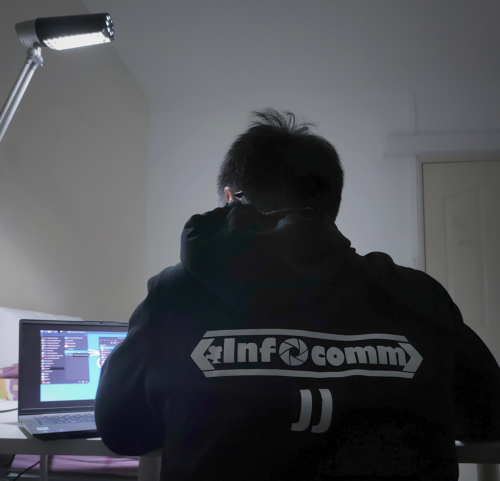

About Me!
CCA
My Projects

Hi, I'm
Jun Jie
A student at Yuan Ching Secondary School, doing mainly cybersecurity and some video editing on the side.
Awards and Achievements
2021
YCEP@TP - 3rd
YCEP@NP - 4th
YCEP@RP - 4th
YCEP Online
YCEP Advanced - Dec 2021
2020
Edusave Character Award (ECHA)
Edusave Award for achievements, good leadership, & Servric (EAGLES)
Infocomm Vice-Chairman (Production) Certificate of Appointment
YCEP@NP - 1st
YCEP@Central - 3rd
YCEP@RP - 10th
YCEP@SP
YCEP Online
STACK the Flags